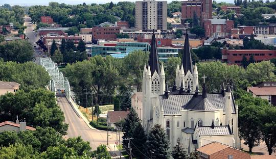
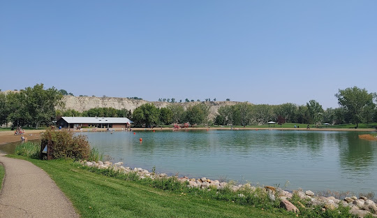

Medicine Hat é uma cidade da província canadense de Alberta. Sua população é de aproximadamente 50 mil habitantes. Localiza-se no sudeste da província. Possui este nome, pois segundo a lenda há muito um médico passou pelo território e lá esqueceu seu chapéu, por isso possui este nome. Historicamente, Medicine Hat é conhecido por seus grandes campos de gás natural, sendo imortalizado por Rudyard Kipling como tendo "o inferno por um porão". Por causa dessas reservas, a cidade é conhecida como "A Cidade do Gás".

O nome "Medicine Hat" é uma interpretação em inglês de Saamis (SA-MUS) - a palavra Blackfoot para o cocar de penas de cauda de águia usado por homens da medicina. Várias lendas estão associadas ao nome de uma serpente fluvial mítica metade homem, metade peixe chamada Soy-yee-daa-bee - o Criador - que apareceu a um caçador e instruiu-o a sacrificar sua esposa para obter poderes místicos, que se manifestaram em um chapéu especial. Outra lenda fala de uma batalha ocorrida há muito tempo entre os Blackfoot e os Cree, na qual um "Homem da Medicina" Cree em retirada perdeu seu cocar na South Saskatchewan River. Vários fatores naturais sempre tornaram Medicine Hat um local de encontro. O vale suavemente inclinado com seus cursos d'água convergentes e as resistentes árvores nativas de choupo atraíram tanto os rebanhos migratórios de bisões que passavam pela região quanto os seres humanos que utilizavam os cursos d'água e caçavam os bisões. Antes da chegada dos europeus, as históricas nações Blackfoot, Cree e Assiniboine usaram a área por centenas de anos, e foram precedidas por milhares de anos por culturas indígenas anteriores.
 Desafios Climáticos e AmbientaisEventos climáticos extremos continuaram a ocorrer em 2021, reforçando a urgência de abordar as mudanças climáticas. O relatório do Painel Intergovernamental sobre Mudanças Climáticas (IPCC) alertou para a necessidade de ações imediatas e abrangentes para limitar o aquecimento global. Inundações, incêndios florestais e outros desastres naturais destacaram a vulnerabilidade de várias regiões e a importância da resiliência.
Avanços TecnológicosNa esfera tecnológica, 2021 trouxe avanços notáveis. A disseminação contínua do trabalho remoto impulsionou a inovação nas ferramentas de comunicação virtual e colaboração online. Além disso, a ascensão das criptomoedas e as discussões sobre regulamentação financeira capturaram a atenção do mundo, redefinindo as conversas sobre economia e finanças. Desafios Sociais e Culturais Questões sociais e culturais também estiveram em destaque em 2021. Movimentos como o Black Lives Matter continuaram a promover conversas sobre justiça racial e igualdade. A conscientização sobre saúde mental aumentou, com mais atenção sendo dada ao impacto psicológico da pandemia e à necessidade de apoio adequado. Conclusão O ano de 2021 foi um capítulo complexo e multifacetado na história recente. Enquanto o mundo buscava se recuperar da pandemia, uma gama diversificada de desafios exigiu a colaboração global e a adaptação constante. À medida que o ano chegava ao fim, as lições aprendidas em 2021 serviram como base para a preparação de um futuro incerto, enfatizando a importância da cooperação, resiliência e ação coletiva.